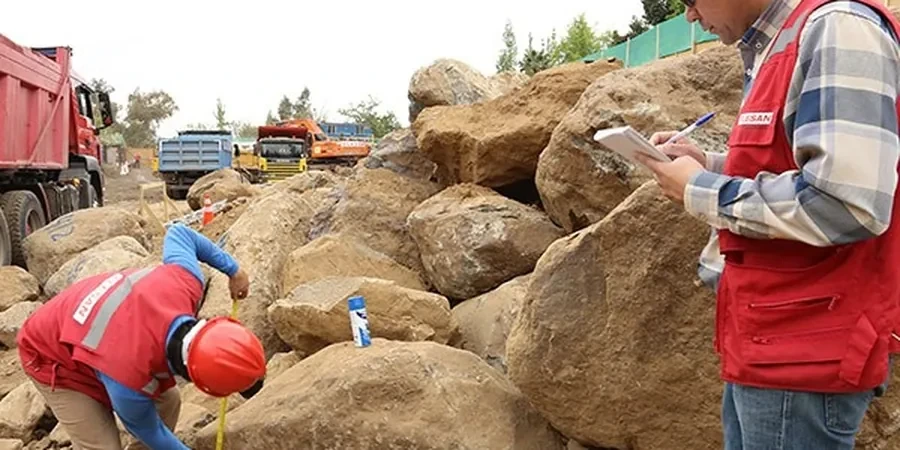

Our firm provides comprehensive geotechnical services in Edinburgh, tailored to the city's unique geological and urban context. We deliver site characterization, foundation design, subsurface investigation, and construction monitoring for projects ranging from historic building assessments to new developments. Our approach integrates regional expertise with rigorous compliance to UK standards, ensuring reliable and code-compliant solutions. For example, our standard penetration testing offers cost-effective soil profiling, while geotechnical instrumentation supports real-time monitoring. We coordinate closely with local authorities and contractors to address Edinburgh's specific challenges, such as variable ground conditions and conservation requirements.

Scope of work in Edinburgh
Working video
Typical technical challenges in Edinburgh
Our team brings consolidated regional experience in Edinburgh's complex ground conditions, from historic tenements to modern infrastructure. We maintain calibrated equipment for In-Situ, including SPT and CPT, and a dedicated laboratory for soil classification, strength, and consolidation tests. Our reports are code-compliant with BS EN 1997-1 and BS 5930, and we coordinate seamlessly with local councils, architects, and contractors to navigate planning and conservation constraints. This ensures efficient project delivery, whether for deep basements, slope stabilisation, or foundation upgrades in sensitive urban settings.
Our services
FAQ
What are the typical soil conditions in Edinburgh for new foundations?
Edinburgh's ground varies widely: glacial till provides good bearing capacity in many areas, but alluvial deposits along the Water of Leith and made ground in the city centre require careful investigation. Volcanic rock near Arthur's Seat can be hard but fractured. We recommend site-specific boreholes and SPT testing to determine ground conditions, especially for multi-storey buildings or basements.
How does Edinburgh's historic environment affect geotechnical investigations?
Many projects involve existing structures, narrow streets, or conservation areas. This restricts access for drilling rigs and may require hand-dug pits or windowless sampling. Monitoring ground movement during excavation is critical near listed buildings. We have experience working with the City of Edinburgh Council's conservation officers to minimise disruption.
What UK regulations apply to groundwater management in Edinburgh developments?
Groundwater abstractions or dewatering must comply with the Water Environment (Controlled Activities) (Scotland) Regulations 2011 (CAR). A license may be required for volumes over 10 m³/day. Discharge to sewers needs Scottish Water approval. We assess groundwater levels and quality early in the design to avoid delays.
What is the typical timeline for a geotechnical investigation in Edinburgh?
For a standard residential or commercial site, investigation (drilling, sampling, lab testing) takes 4-6 weeks, depending on site access and depth. Reporting adds 1-2 weeks. Complex sites with deep boreholes or contamination may extend to 8-10 weeks. We advise starting early in the design process to integrate findings.